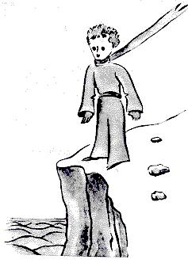

Bhain sé píosa fada asam a dhéanamh amach cad as a dtáinig sé.
Cé gur chuir an prionsa beag seo go leor ceisteanna ormsa, ní
thabharfadh sé cluas do mo chuidse ceisteanna ar chor ar bith.
Rudaí a dúirt sé de thaisme a mhínigh an scéal dom de réir a
chéile. Sa dóigh sin, nuair a chonaic sé m'eitleán den chéad uair,
(ní dhéanfaidh mé pictiúr de m'eitleán, tá sé i bhfad róchasta ag
mo leithéid), d'fhiafraigh sé díom:
- Cad é an rud é sin?

- Ní rud é. Eitlíonn sé. Is eitleán é. M citleán. Agus bhí mé
brodúil as a rá leis go raibh
mé in ann eitilt. Scairt sé a
amach ansin:
- Cad é seo! Ar thit tú as
an spéir?
- Thit, arsa mé féin go
modhúil.
Ó, tá sin an-
ghreannmhar...
Agus lig an prionsa beag
liú breá gáire as a chuir as
domsa go mór. Measaim gur
chóirdodhaoinean mí-ádh
a bhaineann domsa a
ghlacadh dáiríre. Ansin ar
seisean:
- Mar sin, is as an spéir
duitse chomh maith! Cén
pláinéad arb as duit?
Fuair mé tuaileas beag ar an toirt fá dtaobh den rúndiamhair
a bhain leis, agus chuir mé an cheist chuige go grod:
- Is as pláinéad eile duit mar sin?
Ach freagra níor thug sé orm. Bhí sé ag sméideadh a chinn go
séimh agus é ag amharc ar m'eitleán:
-Is cinnte nach dtiocfadh leat teacht ó i bhfad i gcéin aran rud
sin...
Agus tháinig cineál bruadair air a mhair píosa fada. Ansin thóg
sé mo chaora as a phóca agus thosaigh sé ag coimhéad air mar a
bheadh taisce ann.
Tuigfidh sibh chomh tógtha agus a bhí mé leis an méid dá rún
agus a lig sé liom, fá dtaobh de “na pláinéid eile.” Rinne mé
iarracht tuilleadh a fháil amach:
-Cá has duit, a mhaicin bhig? Cá bhfuil an “baile” seo agat? Cá
bhfuil tú ag dul le mo chaora?
D'fhreagair sé mé tar éis bomaite machnaimh:
-An chuid is fearr de faoin chófra a thug tú dom, déanfaidh sé
teach dó san oíche.
-Cinnte. Agus má bhíonn tú i do ghasúr maith, bhéarfaidh mé
téad duit lena ceangal i rith an lae. Agus cuaille fosta.
Bhain sé sin siar as an phrionsa beag, shílfeá:
- Í a cheangal? Nach aisteach an nóiscan é sin!
- Ach mura gceanglaíonn tú í, imeoidh sí léi áit ar bith, agus
rachaidh sí ar seachrán...
Agus lig mo chara beag a sheanscairt gháire arís:
- Ach cén áit a rachadh sí, meas tú!
- Áit ar bith, ag dul i mbéal a cinn....
Ansin arsa an prionsa beag go tromchúiseach:
- Is cuma, tá an áit chomh beag sin agam sa bhaile!
Agus iarracht bheag de chumha air, b'fhéidir, ar seisean.
-Díreach romhatimhbéaldo chinn, ní féidir dul rófhada uilig...